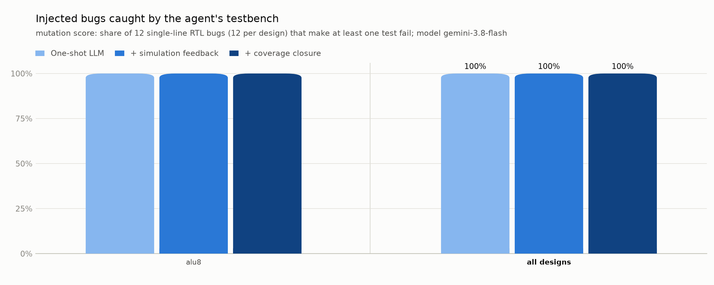

DVAgent benchmark report
Model gemini-3.8-flash via gemini · started 2026-10-19 17:42:35 · 1 designs · 12 injected bugs

Per design
| Design | Level | Passes on correct RTL 1-shot / final | Coverage 1-shot / final | Bugs caught 1-shot / +feedback / final | Debug line found / fixed | LLM calls | False alarms |
|---|---|---|---|---|---|---|---|
| alu8 | easy | yes 7/7 / yes 7/7 | 100.0% / 100.0% | 12 / 12 / 12 of 12 | 4/4 / 4/4 | 5 | 0 |
alu8
| Step | Action | Result on the correct design | Coverage | Agent's diagnosis |
|---|---|---|---|---|
| 0 | generate | pass (7/7 tests) | 100.0% |
Final testbench (tb_00.py)
"""
Verification Plan for alu8 (8-bit Combinational ALU)
Features and Corner Cases Tested:
1. ADD (op=0):
- Basic additions, zero operands (0+0, 0+b, a+0).
- Carry generation: sums exceeding 255 (unsigned carry-out).
- Carry boundary: 255+1, 255+255, 128+128 (carry=1, y=0 -> zero=1).
- Overflow detection:
* positive + positive -> negative result (overflow = 1).
* negative + negative -> positive result (overflow = 1).
* positive + negative / negative + positive (overflow = 0).
* boundary cases: 127 + 1 = -128 (overflow=1), -128 + -128 = 0 (overflow=1).
- Zero and negative flag correctness across all results.
2. SUB (op=1):
- Identity: a - a = 0 (zero=1, carry=0, overflow=0).
- Unsigned borrow: a < b (carry = 1), a >= b (carry = 0).
- Overflow detection:
* positive - negative -> negative result (overflow = 1).
* negative - positive -> positive result (overflow = 1).
* same signs (overflow = 0).
* boundary: 0 - 1 (borrow=1), -128 - 1 = 127 (overflow=1), 127 - (-1) = -128 (overflow=1).
3. Bitwise Logic Ops (AND op=2, OR op=3, XOR op=4):
- Basic logic operations with bit patterns (0x00, 0xFF, 0x55, 0xAA).
- Flag invariant check: carry=0 and overflow=0 for all logical operations.
- Zero and negative flags derived correctly from result y.
4. Shift Left (SHL op=5):
- Shift amounts s in 0..7.
- Carry check: if s == 0, carry = 0; else carry = a[8 - s] (last bit shifted out).
- Upper bits of b (b[7:3]) ignored.
- Overflow is always 0.
5. Shift Right (SHR op=6):
- Shift amounts s in 0..7 with zero fill.
- Carry check: if s == 0, carry = 0; else carry = a[s - 1] (last bit shifted out).
- Upper bits of b (b[7:3]) ignored.
- Overflow is always 0.
6. Set on Less Than (SLT op=7):
- Signed comparisons: pos vs pos, neg vs neg, pos vs neg, neg vs pos.
- Strict inequality: equal values yield y = 0.
- Carry and overflow are 0.
- Extreme values: -128, -1, 0, 1, 127.
7. Constrained-Random Testing:
- Fixed-seed pseudo-random vectors across all operations and full operand space.
"""
import random
import cocotb
from cocotb.clock import Clock
from cocotb.triggers import RisingEdge, FallingEdge, ReadOnly, Timer, ClockCycles
def to_signed8(v: int) -> int:
"""Convert an 8-bit unsigned integer to signed two's complement."""
v = v & 0xFF
return v - 256 if v >= 128 else v
def alu8_ref(a: int, b: int, op: int):
"""Reference model for alu8 based on specification."""
a = a & 0xFF
b = b & 0xFF
s = b & 0x7 # b[2:0]
carry = 0
overflow = 0
if op == 0: # ADD
res = a + b
y = res & 0xFF
carry = 1 if res > 255 else 0
a7 = (a >> 7) & 1
b7 = (b >> 7) & 1
y7 = (y >> 7) & 1
overflow = 1 if (a7 == b7 and y7 != a7) else 0
elif op == 1: # SUB
res = (a - b) & 0xFF
y = res
carry = 1 if a < b else 0
a7 = (a >> 7) & 1
b7 = (b >> 7) & 1
y7 = (y >> 7) & 1
overflow = 1 if (a7 != b7 and y7 != a7) else 0
elif op == 2: # AND
y = a & b
elif op == 3: # OR
y = a | b
elif op == 4: # XOR
y = a ^ b
elif op == 5: # SHL
y = (a << s) & 0xFF
carry = 0 if s == 0 else ((a >> (8 - s)) & 1)
elif op == 6: # SHR
y = (a >> s) & 0xFF
carry = 0 if s == 0 else ((a >> (s - 1)) & 1)
elif op == 7: # SLT
sa = to_signed8(a)
sb = to_signed8(b)
y = 1 if sa < sb else 0
else:
raise ValueError(f"Invalid op: {op}")
zero = 1 if y == 0 else 0
negative = (y >> 7) & 1
return y, carry, overflow, zero, negative
async def check_alu(dut, a: int, b: int, op: int):
"""Drive combinational inputs, wait for propagation, and assert all outputs."""
dut.a.value = a & 0xFF
dut.b.value = b & 0xFF
dut.op.value = op & 0x7
await Timer(1, "ns")
exp_y, exp_carry, exp_overflow, exp_zero, exp_neg = alu8_ref(a, b, op)
act_y = int(dut.y.value)
act_carry = int(dut.carry.value)
act_overflow = int(dut.overflow.value)
act_zero = int(dut.zero.value)
act_neg = int(dut.negative.value)
msg = f"Failed on a={a:#04x}, b={b:#04x}, op={op}:"
assert act_y == exp_y, f"{msg} y expected {exp_y:#04x}, got {act_y:#04x}"
assert act_carry == exp_carry, f"{msg} carry expected {exp_carry}, got {act_carry}"
assert act_overflow == exp_overflow, f"{msg} overflow expected {exp_overflow}, got {act_overflow}"
assert act_zero == exp_zero, f"{msg} zero expected {exp_zero}, got {act_zero}"
assert act_neg == exp_neg, f"{msg} negative expected {exp_neg}, got {act_neg}"
@cocotb.test()
async def test_add_corners_and_random(dut):
"""Test ADD operation corner cases (carry, overflow, zero, negative) and random pairs."""
# Corner cases
corner_pairs = [
(0, 0),
(0, 255),
(255, 0),
(255, 1), # Carry out, y=0, zero=1
(255, 255), # Carry out, y=254
(127, 1), # Overflow: +127 + +1 = -128
(127, 127), # Overflow: +127 + +127 = -2
(128, 128), # -128 + -128 = -256 -> y=0, carry=1, overflow=1, zero=1
(128, 255), # -128 + -1 = -129 -> y=127, carry=1, overflow=1
(64, 63), # 64 + 63 = 127 (no overflow)
(64, 64), # 64 + 64 = 128 (overflow)
(0x80, 0x7F), # -128 + 127 = -1 (no overflow, negative=1)
(0xFF, 0x01), # -1 + 1 = 0 (carry=1, zero=1)
]
for a, b in corner_pairs:
await check_alu(dut, a, b, 0)
# Random pairs
rng = random.Random(101)
for _ in range(1000):
a = rng.randint(0, 255)
b = rng.randint(0, 255)
await check_alu(dut, a, b, 0)
@cocotb.test()
async def test_sub_corners_and_random(dut):
"""Test SUB operation corner cases (borrow/carry, signed overflow) and random pairs."""
corner_pairs = [
(0, 0), # 0 - 0 = 0 (zero=1, carry=0)
(5, 5), # a == b -> y=0, carry=0
(0, 1), # 0 - 1 = 255 (carry/borrow=1, neg=1)
(1, 0), # carry=0
(0, 255), # borrow=1
(255, 0), # borrow=0
(127, 255), # +127 - (-1) = 128 -> overflow=1
(128, 1), # -128 - (+1) = -129 -> overflow=1
(128, 127), # -128 - 127 = -255 -> overflow=1
(127, 128), # 127 - (-128) = 255 -> overflow=1
(128, 128), # -128 - (-128) = 0
(127, 127), # 127 - 127 = 0
]
for a, b in corner_pairs:
await check_alu(dut, a, b, 1)
# Random pairs
rng = random.Random(102)
for _ in range(1000):
a = rng.randint(0, 255)
b = rng.randint(0, 255)
await check_alu(dut, a, b, 1)
@cocotb.test()
async def test_logic_operations(dut):
"""Test AND, OR, XOR operations: values, zero/negative flags, carry=0, overflow=0."""
patterns = [0x00, 0xFF, 0x55, 0xAA, 0x0F, 0xF0, 0x80, 0x01]
for op in [2, 3, 4]: # AND, OR, XOR
for a in patterns:
for b in patterns:
await check_alu(dut, a, b, op)
rng = random.Random(103)
for op in [2, 3, 4]:
for _ in range(500):
a = rng.randint(0, 255)
b = rng.randint(0, 255)
await check_alu(dut, a, b, op)
@cocotb.test()
async def test_shift_left(dut):
"""Test SHL operation: shift amounts 0..7, carry output, upper bits of b ignored."""
# Test all 256 'a' values across shift amounts 0..7 with clean and dirty upper b bits
for s in range(8):
for upper in [0x00, 0x80, 0xF8, 0x28]:
b = upper | s
for a in range(256):
await check_alu(dut, a, b, 5)
@cocotb.test()
async def test_shift_right(dut):
"""Test SHR operation: shift amounts 0..7, carry output, upper bits of b ignored."""
# Test all 256 'a' values across shift amounts 0..7 with clean and dirty upper b bits
for s in range(8):
for upper in [0x00, 0x80, 0xF8, 0x50]:
b = upper | s
for a in range(256):
await check_alu(dut, a, b, 6)
@cocotb.test()
async def test_set_less_than(dut):
"""Test SLT operation: signed comparisons, boundary cases, flags."""
test_vals = [0x80, 0x81, 0xFF, 0x00, 0x01, 0x7E, 0x7F] # -128, -127, -1, 0, 1, 126, 127
for a in test_vals:
for b in test_vals:
await check_alu(dut, a, b, 7)
rng = random.Random(104)
for _ in range(1000):
a = rng.randint(0, 255)
b = rng.randint(0, 255)
await check_alu(dut, a, b, 7)
@cocotb.test()
async def test_random_exhaustive_coverage(dut):
"""Test randomly generated operations across all 8 ops with fixed seed."""
rng = random.Random(1)
for _ in range(5000):
a = rng.randint(0, 255)
b = rng.randint(0, 255)
op = rng.randint(0, 7)
await check_alu(dut, a, b, op)
Bug alu8_m000: '+' replaced by '-' (line 13) — fixed
Injected: wire [8:0] sum = {1'b0, a} + {1'b0, b}; → wire [8:0] sum = {1'b0, a} - {1'b0, b};
Agent's guesses for the faulty line: [13] · attempts: 1
Attempt 1: The sum wire is defined using subtraction ('-') instead of addition ('+'), causing the ADD operation to compute a - b instead of a + b.wire [8:0] sum = {1'b0, a} + {1'b0, b};
Bug alu8_m001: '|' replaced by '&' (line 33) — fixed
Injected: 3'd3: y = a | b; // OR → 3'd3: y = a & b; // OR
Agent's guesses for the faulty line: [33] · attempts: 1
Attempt 1: Op 3 is the bitwise OR operation, but the RTL incorrectly computes bitwise AND ('a & b') instead of bitwise OR ('a | b').3'd3: y = a | b; // OR
Bug alu8_m003: '&&' replaced by '||' (line 30) — fixed
Injected: overflow = (a[7] != b[7]) && (diff[7] != a[7]); → overflow = (a[7] != b[7]) || (diff[7] != a[7]);
Agent's guesses for the faulty line: [30] · attempts: 1
Attempt 1: For SUB, signed overflow occurs when a and b have different sign bits AND the result sign bit differs from a's sign bit. Line 30 incorrectly used the logical OR operator (||) instead of logical AND (&&).overflow = (a[7] != b[7]) && (diff[7] != a[7]);
Bug alu8_m004: '<' replaced by '<=' (line 37) — fixed
Injected: default: y = {7'd0, $signed(a) < $signed(b)}; // SLT (signed) → default: y = {7'd0, $signed(a) <= $signed(b)}; // SLT (signed)
Agent's guesses for the faulty line: [37] · attempts: 1
Attempt 1: SLT is set-on-less-than (strict inequality a < b), but line 37 uses '<=', which incorrectly yields 1 when a and b are equal.default: y = {7'd0, $signed(a) < $signed(b)}; // SLT (signed)
Generated by DVAgent.